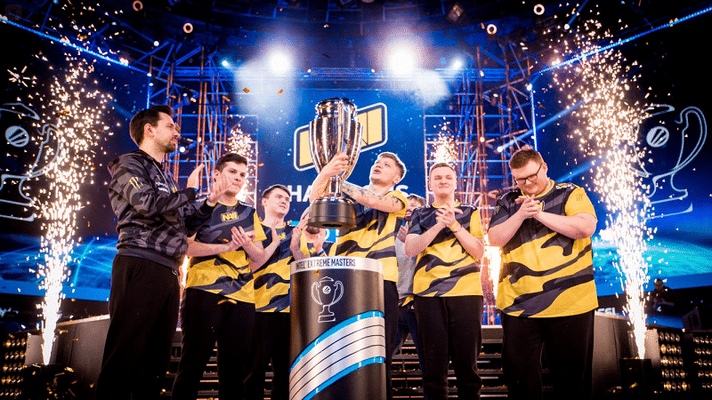

.
 Этот сайт про команду "Natus Vincere", с историей 4-х её игроков.
Этот сайт про команду "Natus Vincere", с историей 4-х её игроков.

Под хлестким названием NaVi скрывается популярная украинская киберспортивная организация Natus Vincere
На сегодняшний день в состав организации входят коллективы представляющие ряд киберспортивных дисциплин:
- CS:GO;
- DOTA 2;
- Rainbow Six;
- Apex Legends;
- PUBG
У истоков такой масштабной организации стояли два человека. Это игрок и бизнесмен из Республики Казахстан – Мурат «Arbalet» Жумашевич и его партнер – Сергей»starix» Ищук. Именно благодаря их стараниям 2009 год стал датой рождения одной из самых титулованных и опытных команд по CS:GO.
Сергей «starix» Ищук долгое время оставался иконой команды. Когда игрок почувствовал, что теряет в результатах, не стал держаться на старых заслугах. Он принял на себя функции тренера, которые успешно выполнял до сентября 2020 года.
Начало больших побед
Буквальный перевод с латыни названия команды Natus Vincere означает «рожденные побеждать». Официальный день рождения «Natus Vincere» – 18 декабря 2009 года. Костяк команды по CS составили ребята из украинской команды KerchNET.
Закат и возрождение
Успешное выступление NaVi продолжалось до 2016 года. Затем результаты резко ухудшилдись. Команда хондрила и не погла пройти даже в плей-офф крупных турниров. Менеджмент клуба настаивал на привлечении новых, молодых талантов.
Первым уступить дорогу решил Даниил «Zeus» Тесленко. На его позицию уже давно присмотрели замену. Им оказался Александр «s1mple» Костылев. Замена оказалась идеальной. Александру удалось вписаться в командные действия и это принесло успех на ESL One: New York 2016. Они с большим трудом выиграли турнир, одолев по пути самые крутые команды планеты.
Александр «s1mple» Костылев был признан лучшим игроком турнира. Казалось, что сплав талантливых молодых игроков и основы из опытных парней принесет отличный результат. Реальность оказалась намного хуже. 2017 год прошел под знаком неудач.
Руководство, в привычном стиле, стало искать «крайнего». В итоге словаку GuardiaN’у указали на дверь. Но дела пошли настолько плохо, что пришлось снова отправляться на поклон к Даниилу «Zeus» Тесленко. Он не стал упираться и откликнулся на просьбу о помощи родного клуба. Став капитаном, Даниил сразу начал присматривать себе замену, так как пришел только на помощь на один сезон.
Его креатурой стал знаменитый Кирилл ‘Boombl4’ Михайлов (Бумыч). Именно ему передал обязанности капитана и лидера команды «Zeus». Пазл собрался и в клуб вернулись победы. За 2018 год NaVi взяли три крупных титула и четыре раза играли в финалах.
Особенно ярко играл Александр «s1mple» Костылев. В течение года он пять раз признавался лучшим игроком турнира и в итоге был признан лучшим игроком 2018 года по версии авторететного ресурса hltv.org.
2019 год начался достаточно неплохо – NaVi добрались до полуфинала чемпионата мира IEM Katowice Major 2019. Весна 2019 началась с триумфа на турнире StarSeries & i-League Season 7 и приза в $250.000. Однако, потом настала черная полоса. Неудачи следовали одна за другой. Команда не могла сосредоточиться и найти свою игру. Надежду болельщикам дало выступление на престижном турнире ESL One Cologne 2019, на котором удалось дойти до полуфинала. Это дало фанатам NaVi лучик надежды перед предстоящим чемпионатом мира Starladder Berlin 2019. Однако, надежды начали сыпаться еще в групповом этапе. «Рожденные побеждать» со скрипом прошли в ¼ финала, где уступили достаточно средней по силе команде NRG ESports.